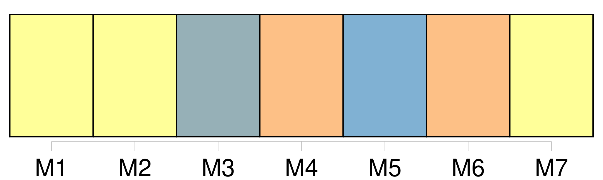
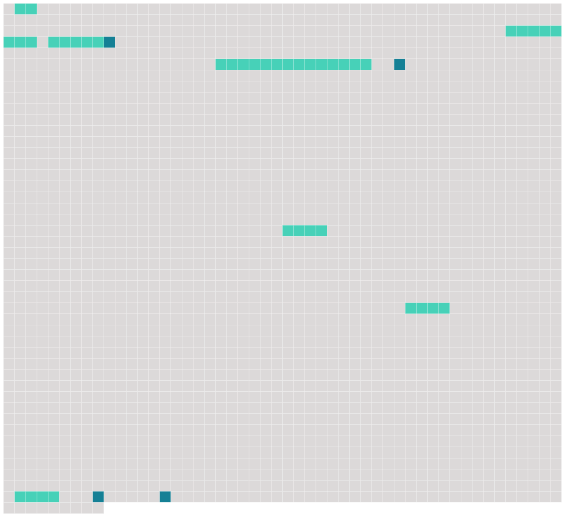

Longueur nb maillons : 11 mentions |
  |
Dans [la salle] ils trouvèrent les trois officiers de moindre grade : un lieutenant, Otto de Grossling ; deux sous-lieutenants, Fritz Scheunaubourg et le marquis Wilhem d'Eyrik, un tout petit blondin fier et brutal avec les hommes, dur aux vaincus, et violent comme une arme à feu. [2 phrases]
[La salle à manger du château d'Uville] était [une longue et royale pièce] [dont] les glaces de cristal ancien, étoilées de balles, et les hautes tapisseries des Flandres, tailladées à coups de sabre et pendantes par endroits, disaient les occupations de Mlle Fifi, en ses heures de désoeuvrement. [1 phrases]
Et le déjeuner des officiers s'écoula presque en silence dans [cette pièce mutilée, assombrie par l'averse, attristante par son aspect vaincu] , et [dont] le vieux parquet de chêne était devenu solide comme un sol de cabaret. [30 phrases]
Or, comme il était fort riche et magnifique, son grand salon, dont, la porte ouvrait dans [la salle à manger] , présentait, avant la fuite précipitée du maître, l'aspect d'une galerie de musée. [9 phrases]
» [24 phrases] Et tout de suite on entra dans [la salle à manger] Illuminée, [elle] semblait plus lugubre encore en [son] délabrement piteux ; et la table couverte de viandes, de vaisselle riche et d'argenterie retrouvée dans le mur où l'avait cachée le propriétaire, donnait à ce lieu l'aspect d'une taverne de bandits qui soupent après un pillage. |
 |
La ressource peut être téléchargée sur la page Ortolang
Si vous avez des questions ou vous voyez des erreurs, merci d'envoyer un mail à silvia.federzoni89@gmail.com
Site développé par S. Federzoni (contact)